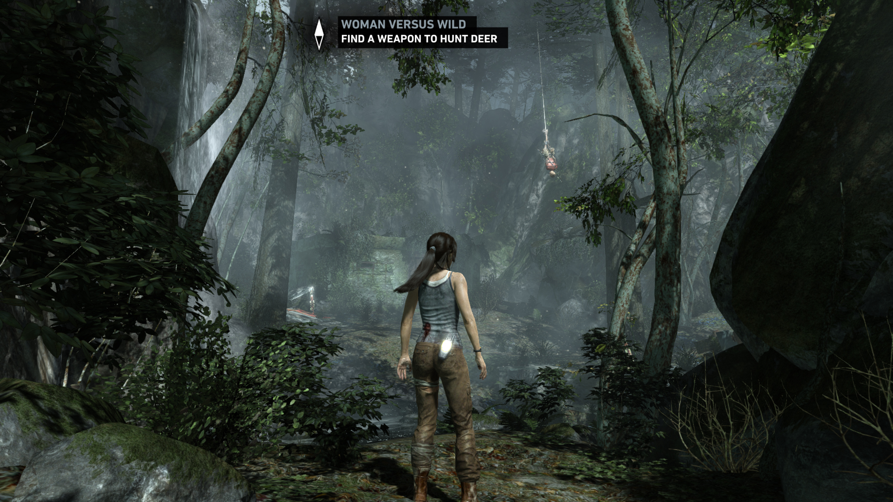

Finding Elizabeth
Pathfinding and Alternative Realism
Jonathan Jin
05/29/14
On Realism
- Realism = common goal among development teams
- ↑ realism → ↑ desirability
Graphics
- Commonly used to achieve realism
- Very good at this
- Modern-day graphics hardware → ↓ tech barriers


A Slight Problem
- Visual realism = "straightforward"
- Inherent difficulties associated with computer graphics
- Diminishing returns
- Uncanny Valley
- Impede increase of realism solely by graphical means
- Need: new, alternative ways to ↑ realism

What They Did
- Unique path-finding algorithm for Elizabeth
- Approximate & model humanity
- Curiosity
- Autonomy
The Algorithm: Key Points
- Leader-follower model
- Destination-setting
- Goals and Points of Interest (POIs)
Leader-follower model
- Leader
- "Mothership"
- Follower
- Position and movement = relative to
Leader.position - Freely set Destination Points between Leader and goal positions
- Position and movement = relative to
Destination Points
- At any given moment, Follower has a destination point
- Will try to move toward that point
- Upon reaching, set new destination point
Map: Key Elements
- Goal
- Points of Interest (POIs)
Points of Interest (POIs)
- Points of Interest (POIs) in environment
- Follower may interact with any POI within
Follower.sightRadius- Interactions:
- Clever quips
- Item acquisition
- Etc.
- Overrides Leader-Follower radius restrictions
- Reinstated upon interaction completion
- Interactions: